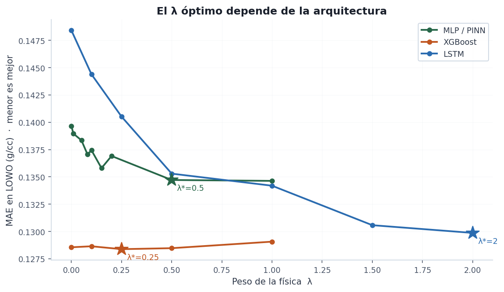
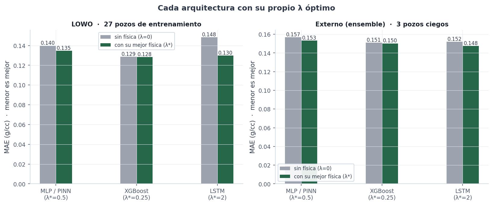
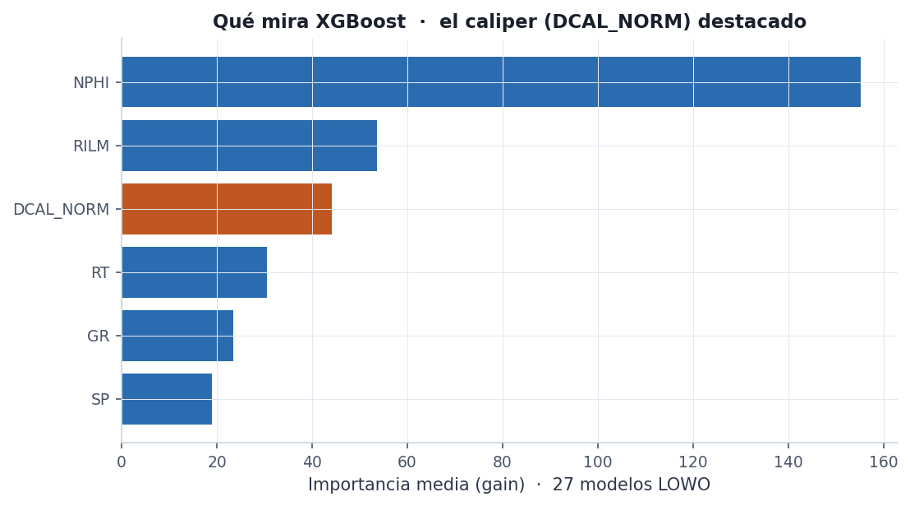

Extending the physics-informed method
The main report showed that adding a physics term to an MLP ($\text{Loss} = \text{Loss}_\text{data} + \lambda\cdot\text{Loss}_\text{physics}$) improves density prediction on wells the model never saw. After a LinkedIn comment suggested trying the idea on gradient boosting and a sequential network, and giving the model a bad-hole signal (caliper), I took both suggestions seriously and measured them rigorously.
This experiment isn't about «which one wins». The already-published MLP/PINN stays as the reference, not a rival. What I wanted to know is more specific: does that same physics term transfer to XGBoost and to an LSTM, or was it something particular to the MLP? For the comparison to be fair, everything runs on the report's same protocol.
Project invariant. In all three architectures, $\lambda=0$ reproduces the plain (data-only) model exactly. The physics term is an add-on to that model, never a different architecture. So the improvement from $\lambda=0$ to $\lambda>0$ isolates what the physics contributes.
Three pieces, identical across the three models, so the only real variable is the architecture and the value of $\lambda$:
DCAL_NORM (the differential
caliper, normalized per well). It's the «enlarged borehole» signal the comment asked for:
where the hole is washed out, the measured density is unreliable and the model can learn to
distrust it.seed=42), leak-free per-well normalization, metrics in g/cc. None of
this changes from the report.
On complexity: the models are deliberately modest, comparable in robustness to the
5→64→64→32→1 MLP. The LSTM is 1 layer, hidden=64, windows of 32 depth
samples that don't cross well boundaries. XGBoost runs with max_depth=5,
eta=0.05, 400 trees. I wasn't after the biggest model, but the cleanest comparison.
On logs being noisy. A well measurement isn't an exact value: it carries tool noise and borehole-condition noise. I didn't ignore that, I treated it as data quality. The caliper weight $w$ lowers the physics' confidence exactly where the measurement is least reliable (washed-out hole), and I report the blind wells under two protocols (average of 27 models and a single model) precisely to separate how much of the gain is signal and how much is variance. Modeling the noise explicitly —a prediction with its uncertainty— would be the natural next step; it's outside the scope of this experiment.
One key decision: I didn't assume the MLP's optimal $\lambda$ (0.5) would carry over to the other architectures. I ran a per-architecture $\lambda$ sweep. It turned out to matter a lot.
This was the most interesting part. Sweeping $\lambda$ in cross-validation (LOWO), each architecture responds to the physics differently:
| Model | Metric | No physics (λ=0) | With physics (best λ) | Best λ |
|---|---|---|---|---|
| MLP / PINN (reference) | MAE | 0.1396 | 0.1347 | 0.5 |
| MLP / PINN (reference) | R² | 0.276 | 0.327 | 0.5 |
| XGBoost | MAE | 0.1286 | 0.1284 | 0.25 |
| XGBoost | R² | 0.377 | 0.376 | 0.25 |
| LSTM | MAE | 0.1484 | 0.1299 | 2.0 |
| LSTM | R² | 0.168 | 0.337 | 2.0 |

Three different behaviors, and all three make sense:
LOWO measures generalization within the field. The acid test is the 3 wells set aside from the start, which no model ever saw. As in the report, I predict them two ways —averaging the 27 LOWO models (ensemble) and with a single model trained on the 27 wells— as a robustness check.
| Model · evaluation | Metric | No physics (λ=0) | With physics (best λ) |
|---|---|---|---|
| XGBoost · average of 27 | MAE | 0.1510 | 0.1501 |
| XGBoost · average of 27 | R² | 0.285 | 0.290 |
| XGBoost · single model | MAE | 0.1514 | 0.1509 |
| XGBoost · single model | R² | 0.282 | 0.285 |
| LSTM · average of 27 | MAE | 0.1519 | 0.1475 |
| LSTM · average of 27 | R² | 0.262 | 0.298 |
| LSTM · single model | MAE | 0.1771 | 0.1500 |
| LSTM · single model | R² | 0.024 | 0.287 |
| MLP / PINN · average of 27 (ref.) | MAE | 0.157 | 0.153 |
| MLP / PINN · single model (ref.) | R² | 0.171 | 0.257 |

The other half of the comment was giving the model the bad-hole signal. XGBoost lets us see, unambiguously, how much each input weighs in its decisions:

DCAL_NORM (caliper) genuinely
participates in the model's decisions without dominating them.The caliper shows up with a modest but real weight: the model uses it to modulate its confidence where the borehole is enlarged, which is exactly the point. It isn't the dominant feature —neutron and gamma ray still lead, as the physics demands— but it adds the data-quality context that wasn't there before.
All the code for these experiments (src/model_trees.py, src/model_lstm.py,
src/features_caliper.py and scripts 11–15) and the raw
results are in the repository, under the same protocol as the main report.